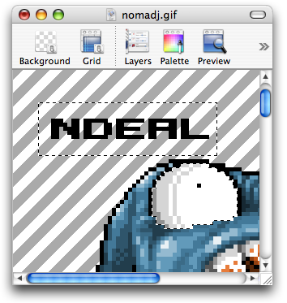

Working with selection
To work efficiently, you must occasionally specify a particular part of a layer that you'd like to manipulate—to copy, delete, move, isolate, or any number of other things. Pixen has excellent selection capabilities, providing support for irregular (multiple) selection. Here's what a selection might look like in a typical document:

While a selection is active, you can only draw inside of it. You can translate the selection marquee itself by clicking inside of it and dragging while any of the selection tools are active. If you'd like instead to move everything inside the selected region, the move tool can help you.
See also
Using the rectangular selection tool
Using the magic wand tool
Using the lasso selection tool
Using multiple selection
Selection Topics